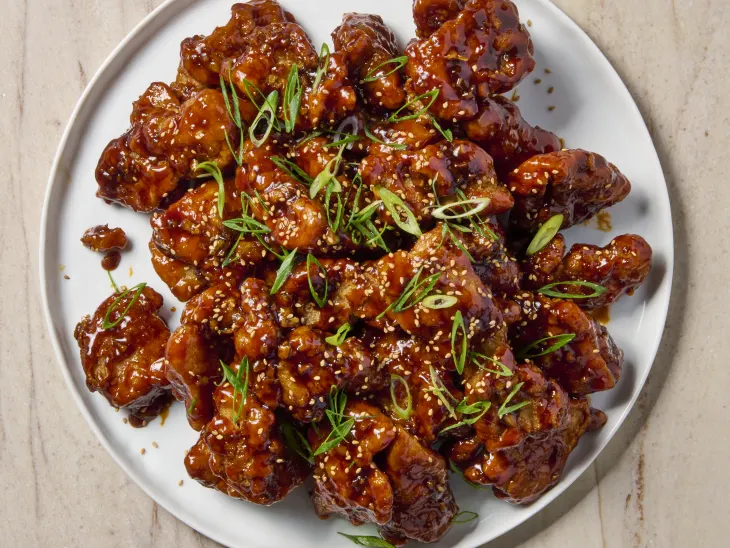

Korean Fried Chicken Recipe

Key Ingredients in Korean Fried Chicken
- Chicken: Boneless thighs keep things juicy.
- Cornstarch:More like the cornstar of the show! Used in the dredge and batter for a light and crispy crust that is naturally gluten-free.
- Baking powder:Helps create an airy crust!
- Garlic:Used fresh (grated in the batter) and in powder form (whisked into the dredge) to infuse garlic flavor throughout.
- White pepperThe bright, earthy, and more mild peppercorn adds a nice pop of flavor but not overwhelming spice, and is common in Korean fried chicken.
- Gochujang:A little goes a long way in the spicy glaze, but you can always add more if you like it hot!
How to Make Korean Fried Chicken
- Dredge and batter the chicken.Make a cornstarch dredge infused with dried spices like garlic powder, white pepper, and ginger powder. In a separate bowl, make a cornstarch-based batter that has freshly grated garlic, ginger, soy sauce (or tamari if you’re gluten-free), and rice wine vinegar. Toss 2-inch pieces of boneless, skinless chicken thighs in the dredge, add to the batter and toss, then put them back into the dredge.
- Fry the chicken.Heat canola oil (or another neutral oil with a high smoking point) in a heavy-bottomed pot or deep skillet for about 10 minutes over medium heat. Carefully lower chicken pieces one at a time into the hot oil and cook for about 8 minutes, or until evenly golden-brown. Drain on a wire rack set over paper towels.
- Toss the chicken with glaze.While the chicken is cooking in batches, make the glaze by simmering soy sauce (or tamari), brown sugar, rice vinegar, and chopped garlic with a 1:1 cornstarch-to-water slurry to thicken. Whisk in gochujang and sesame oil, and toss the hot chicken in the glaze to coat.
Home